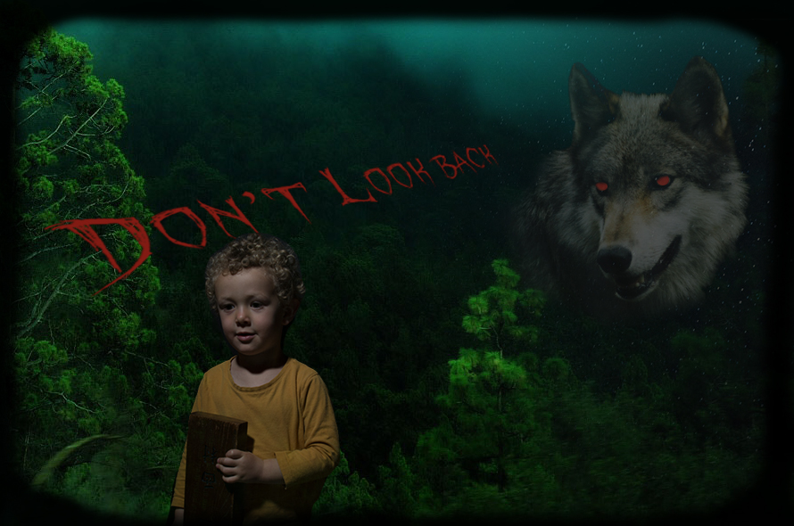

Introduction | Photoshop | Illustrator | Time Base Media | InDesign | Contact
The Photoshop class was fun, and I got to use the software in ways that I hadn’t explored before, particularly working with type. The final project involved building a selfie. I’m camera shy, so I chose a photo of my son as the subject, placing him against a luscious green forest background, with a starry night. A menacing wolf leers at him, and he’s completely oblivious. The challenge for me was choosing a background image, and an appropriate font. Hopefully, the resulting image feels a little like a horror movie poster.